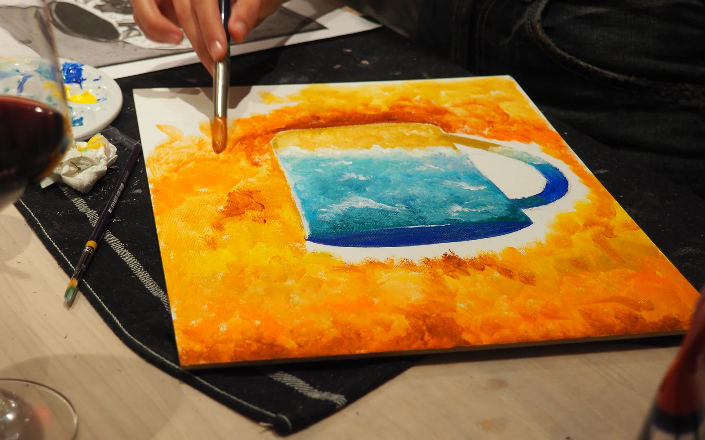
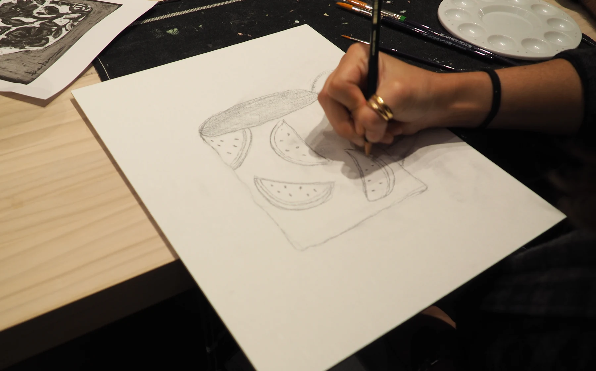
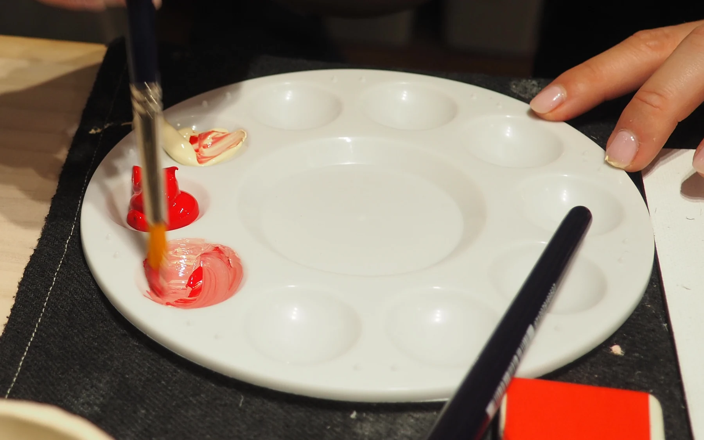
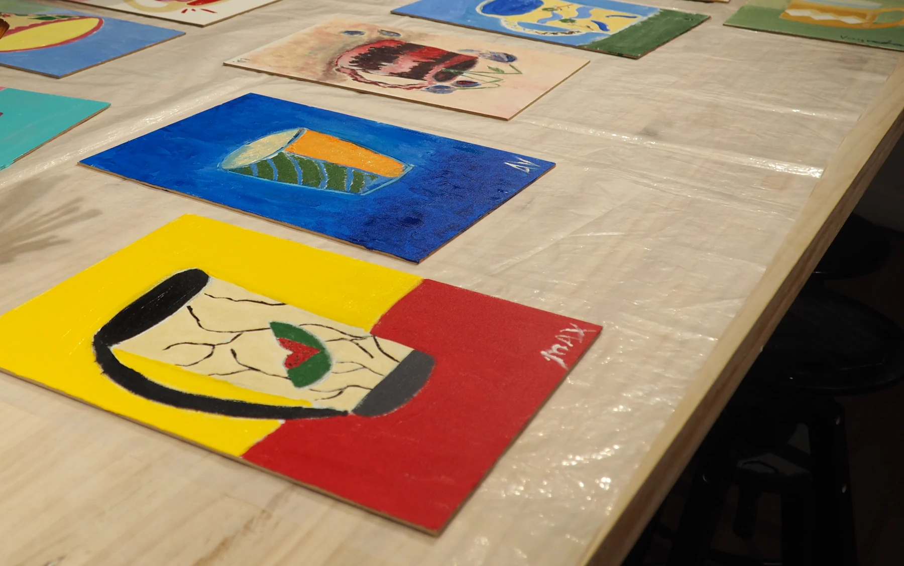

P1011200.JPG · Apertura / pintura en acción
Contraste azul y amarillo, gesto legible y textura real. Es pintura sobre lienzo: la taza es el motivo pintado, no una pieza cerámica en ejecución.
Copa y material periférico en el original; recorte ajustado. No representa todos los formatos de Studio.

P1011151.JPG · Carrusel / dibujo y observación
Diagonal del soporte y gesto del lápiz claros; aporta una fase distinta del proceso. Se conserva el dibujo completo.
Luz cálida y sombra de la mano. Se retira el borde inferior con calzado/tatuaje; no se presenta como imagen de grupo.

P1011174.JPG · Carrusel / mezcla de color
Acción reconocible, proximidad y materia; contrapunto a los planos del lienzo, sin envases comerciales protagonistas.
Gesto con ligero movimiento. El recorte se concentra en pincel y paleta, excluye muñeca y taza periférica; no debe ampliarse hasta hacer dominante la falta de foco de la mano.

P1011204.JPG · Carrusel / resultados reunidos
Variedad cromática y varias interpretaciones de una misma práctica. Única toma de resultados elegida.
El original incluye torsos y entorno de cerámica. Derivado de objetos: se retira toda la franja superior humana y el recipiente lateral. No atribuir estos resultados a empresas o Kids.
Selección editorial, recortes, copy y diseño. Las fotografías humanas quedan retenidas; comprobar permisos e identificación antes de incorporarlas. Derechos finales de fotografías y obras pendientes de cierre antes de producción.